Міністерство освіти та науки України
ДВНЗ "Приазовський державний технічний університет"
Факультет інформаційних технологій
Кафедра вищої та прикладної математики
Кафедра «Вищої та прикладної математики» забезпечує неперервну математичну підготовку для всіх технічних і економічних спеціальностей ПДТУ, проводить курси підвищення кваліфікації вчителів математики.
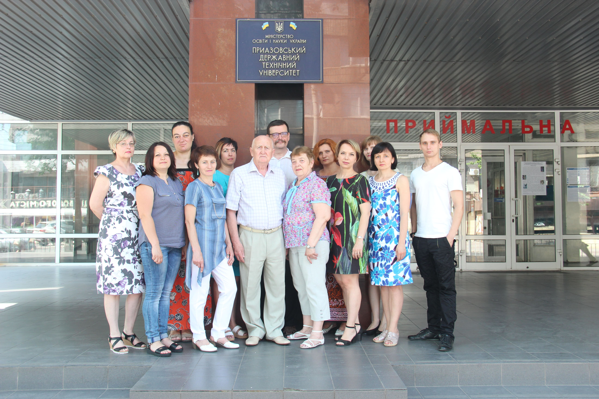
Керівництво
Завідувач кафедри вищої та прикладної математики
Холькін Олександр Михайлович
професор, доктор фізико-математичних наук
Спеціальність: 01.01.02 - диференціальні рівняння
Має понад 130 наукових праць, серед них 2 монографії, одна з яких опублікована в США, 3 підручники, 6 навчальних посібників, з них 3 з грифом МОНУ.
19 наукових праць опубліковано в журналах, що входять до провідних наукометричних баз даних Scopus та Web of Sciences.
Склад кафедри
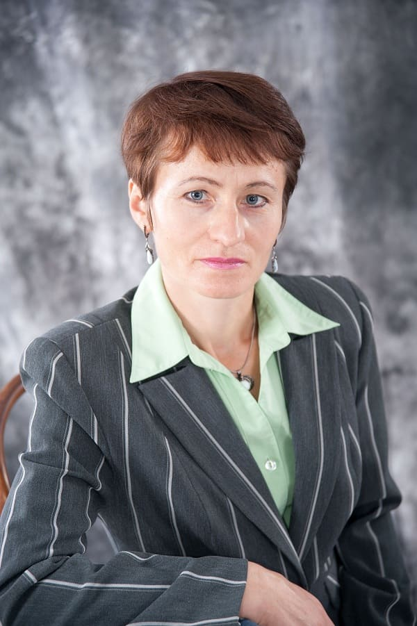
Буланчук Галина Григорівна
доцент, кандидат фізико-математичних наук
Спеціальність: 01.02.05 - механіка рідини, газу та плазми
Область інтересів:
Вихрові течії в гідродинаміці;
Математичне та комп’ютерне моделювання.
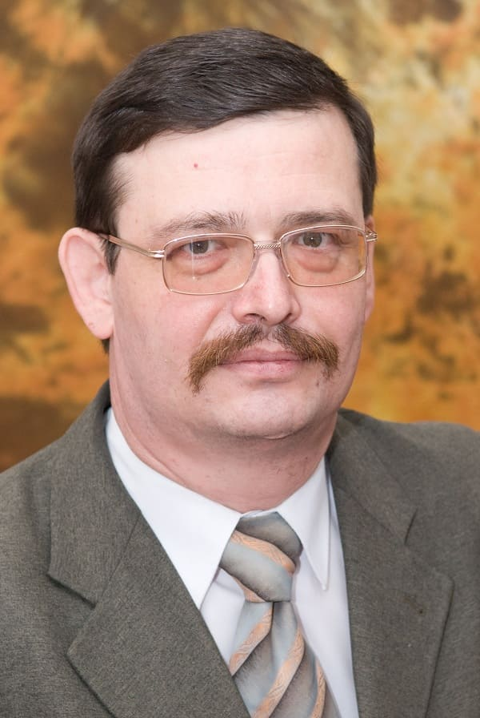
Десятський Сергій Петрович
доцент, кандидат фізико-математичних наук
Спеціальність: 01.01.01 - математичний аналіз
Область інтересів:
Інтегральні рівняння
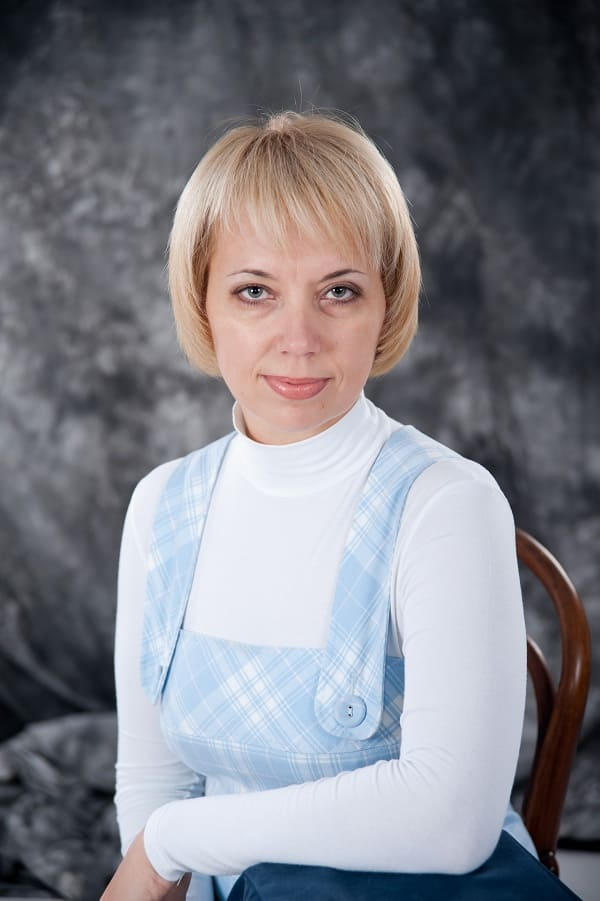
Калініна Ірина Миколаївна
доцент, кандидат педагогічних наук
Спеціальність: 13.00.02 - теорія і методика викладання (математика)
Область інтересів:
Інтегральні рівняння
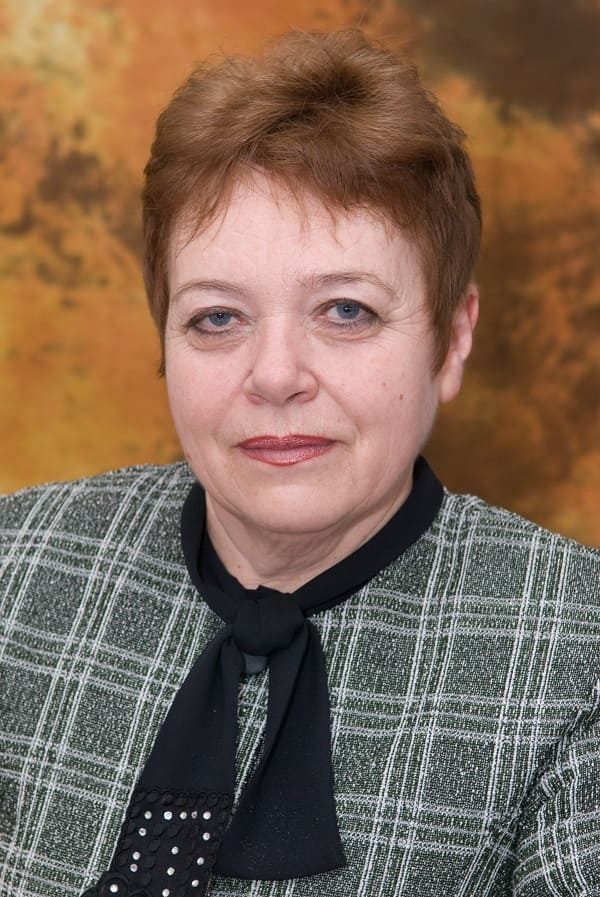
Літвін Наталія Василівна
доцент, кандидат фізико-математичних наук
Спеціальність: 01.01.05 - теорія ймовірностей та математична статистика
Область інтересів:
Інтегральні рівняння
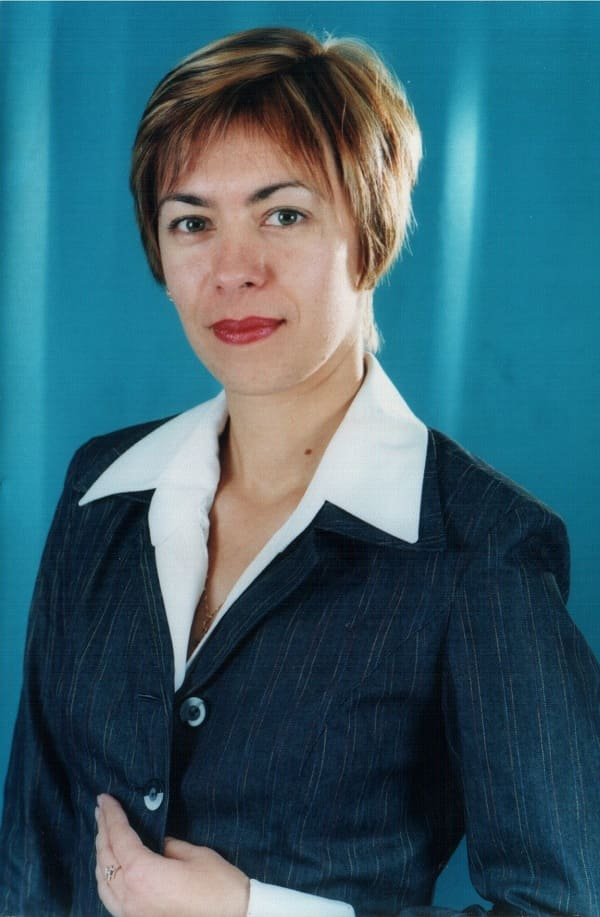
Лупаренко Олена Валентинівна
доцент, кандидат технічних наук
Спеціальність: 01.02.04 - механіка деформівного твердого тіла
Область інтересів:
Інтегральні рівняння
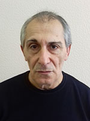
Санікіндзе Тарієл Автанділович
доцент, кандидат фізико-математичних наук
Область інтересів:
Інтегральні рівняння
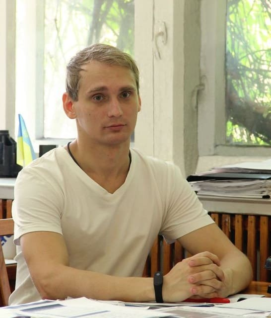
Остапенко Артем Олексійович
старший викладач, кандидат технічних наук
Спеціальність: 01.05.02 - математичне моделювання та обчислювальні методи
Область інтересів:
Обчислювальна гідродинаміка;
Математичне та комп’ютерне моделювання;
Програмування на мовах C++, С#;
Front-end розробка.
Графов Віктор В’ячеславович
старший викладач
Спеціальність: Математика
Кваліфікація за дипломом: Математик
Область інтересів:
Інтегральні рівняння
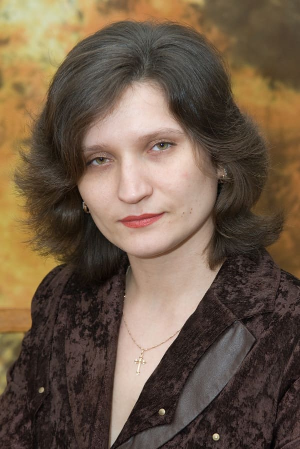
Литвин Ганна Михайлівна
старший викладач
Спеціальність: Математика
Кваліфікація за дипломом: Математик. Викладач
Область інтересів:
Інтегральні рівняння
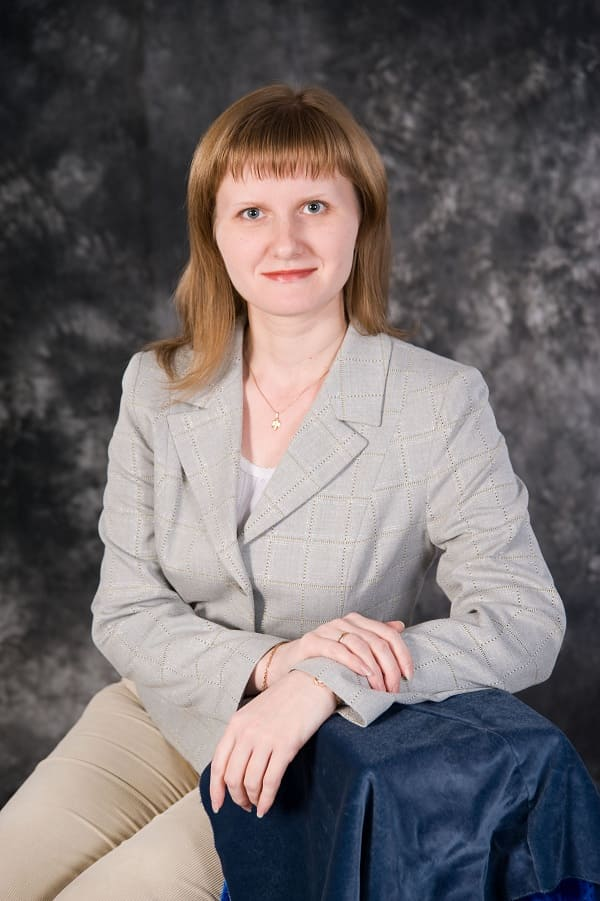
Носовська Світлана Євгенівна
старший викладач
Спеціальність: Математика
Кваліфікація за дипломом: Математик. Викладач
Область інтересів:
Інтегральні рівняння
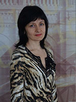
Склярова Тереза Германівна
старший викладач
Спеціальність: Математика
Кваліфікація за дипломом: Математик. Викладач
Область інтересів:
Інтегральні рівняння
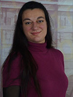
Борзіло Оксана Олександрівна
асистент
Область інтересів:
Інтегральні рівняння
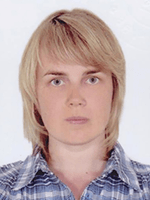
Кіркіна Тетяна Юріївна
аспірант
Область інтересів:
математичне моделювання транспортних систем з використанням методів штучного інтелекту.
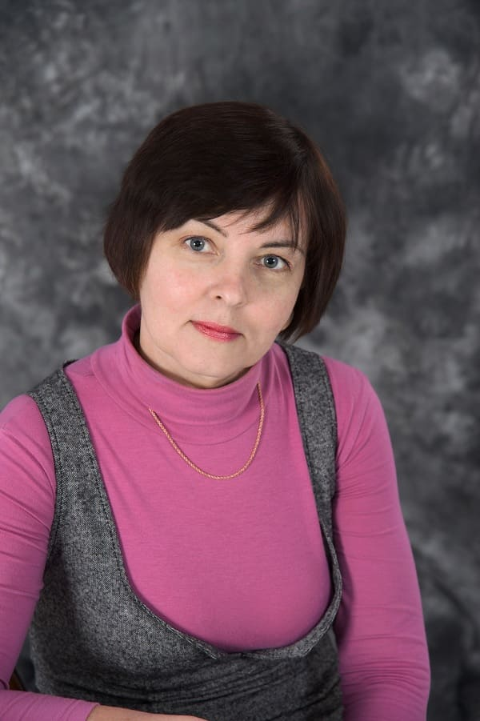
Бовдур Вікторія Олександрівна
Завідувач лабораторією
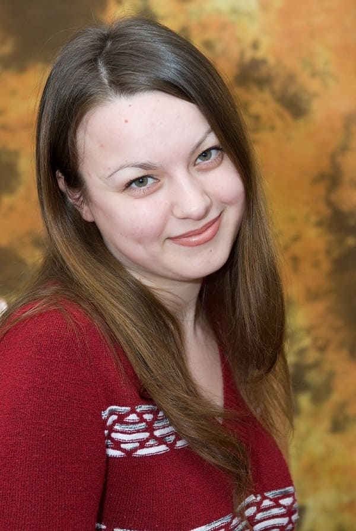
Ахтирська Ольга Олексіївна
Старший лаборант
Кафедра вищої математики заснована в 1944-1945 учбовому році. Її створення було обумовлено необхідністю організації учбового процесу по вищій математиці для підготовки інженерів-металургів в Маріупольському металургійному інституті, потреба в яких в ті роки постійно зростала, а також для проведення наукових досліджень.
Зараз на кафедрі працюють 14 викладачів, з них 1 доктор наук і 8 кандидатів наук. На кафедрі були підготовлені і захищені 3 докторські дисертації (Сударєв В.П., Коляда Ю.Є. і Холькін О.М.), а також 20 кандидатських дисертацій. В даний час над докторською дисертацією працює доцент кафедри Буланчук Г.Г. Активно працює над кандидатською дисертацією аспірант Кіркіна Т.Ю.
З 2008 р. на кафедрі було відкрито прийом студентів на спеціальність прикладна математика. Того ж року кафедрі було надано назву «Вищої та прикладної математики». Студенти даної спеціальності одержують фундаментальну математичну підготовку і здатні вирішувати широкий спектр задач практично у всіх областях науки і техніки, пов’язаних із створенням математичних моделей виробничих, технологічних, економічних, природничих і управлінських процесів. З 2019 р. на кафедрі було відкрито прийом студентів на спеціальність середня освіта (математика), випускники за якою оволодіють майстерністю викладання математики.
Кафедра має у своєму розпорядженні методичний кабінет, комп’ютерний клас, лекційні аудиторії обладнані проекторами. На сайті університету розміщений банк учбово-методичних матеріалів в електронному виді, обсяг якого постійно розширюється. Кафедрою щорічно публікуються наукові праці у спеціальних вітчизняних і зарубіжних виданнях, періодично видаються книги та монографії.
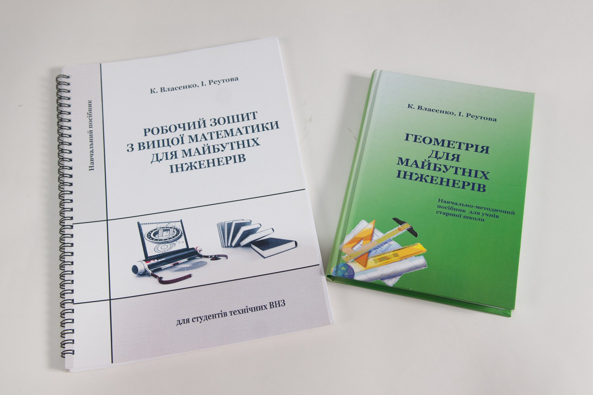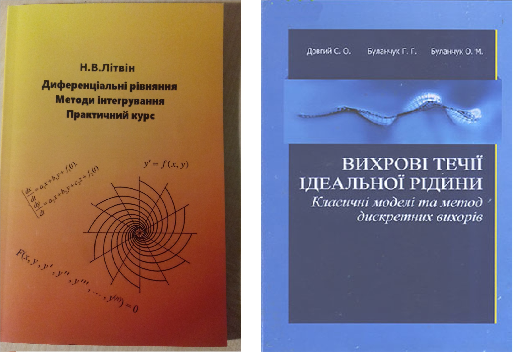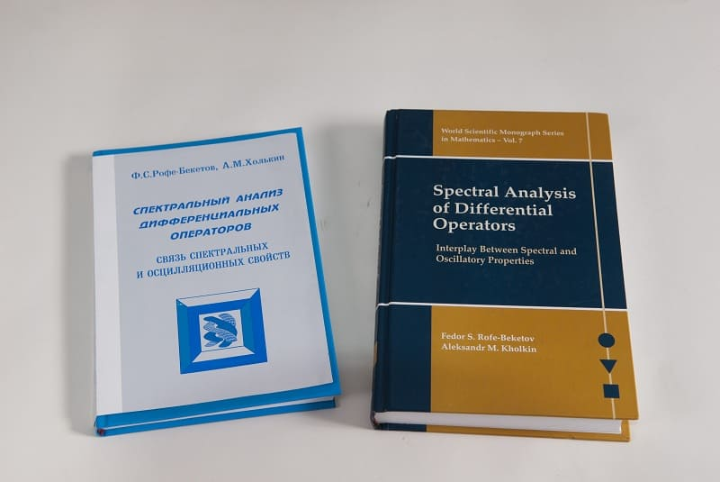
На кафедрі постійно проводяться:
Науково-практичні конференції для студентів;
Курси підвищення кваліфікації для вчителів;
Майстер-класи для школярів з математики, комп’ютерного моделювання та програмування.